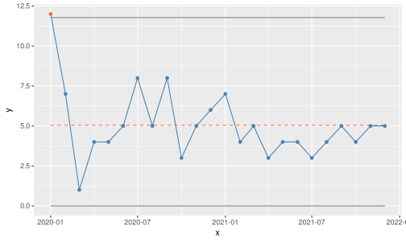
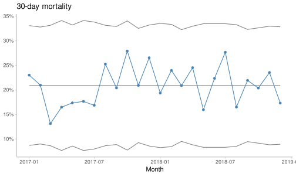

Chapter 9 SPC Charts with ggplot2
Armed with the battery of functions from Chapter 8 we are able to construct any of the Magnificent Eight using functionality from base R. Furthermore, it is easy to add new types of SPC charts to the library. To achieve this, all we have to do is to write an appropriate spc.*() function to handle the calculations of the centre line and limits and to include the function type in thespc() function’s chart argument.
Because we have used a modularised approach and made a separate function for plotting spc objects, plot.spc(), it is also a simple task to use any other plotting method.
In this chapter we will build an alternative plot function, which uses ggplot2 as its plotting engine. ggplot2 has many advantages over plotting with base R function. Not because ggplot2 is able to do things that cannot be done with base R, but because it makes some operations a lot easier.
For example, with ggplot2 we do not need to worry about scaling the axes to accommodate data that are added to the plot or to make room for axis labels and tick marks. These are all handled gracefully by ggplot2 itself.
Also ggplot2 has an extensive theming engine that makes it (relatively) easy to customise the non-data parts of a plot, for example colour palettes, legends, and number/date formats.
First we will create an spc object and assign it to a variable name for later use:
Note that we suppressed the plotting and assigned the (invisible) output to the variable ‘p’. We can now continue working with p as with any other R object.
## [1] "spc" "data.frame"## x y n lcl cl ucl sigma.signal runs.signal chart
## 1 2020-01-01 12 1 0 5.041667 11.77776 TRUE TRUE c
## 2 2020-02-01 7 1 0 5.041667 11.77776 FALSE TRUE c
## 3 2020-03-01 1 1 0 5.041667 11.77776 FALSE TRUE c
## 4 2020-04-01 4 1 0 5.041667 11.77776 FALSE TRUE c
## 5 2020-05-01 4 1 0 5.041667 11.77776 FALSE TRUE c
## 6 2020-06-01 5 1 0 5.041667 11.77776 FALSE TRUE c
We may now create any number of alternative plotting functions for spc objects. In this example we will create a plotting function that uses ggplot2.
# Load ggplot2
library(ggplot2)
# Function for plotting spc objects with `ggplot()`
ggspc <- function(p) {
# Set colours
col1 <- 'steelblue'
col2 <- 'tomato'
linecol <- 'gray50'
dotcol <- ifelse(p$sigma.signal, col2, col1)
clcol <- ifelse(p$runs.signal[1], col2, linecol)
cltyp <- ifelse(p$runs.signal[1], 'dashed', 'solid')
# Plot the dots and draw the lines
ggplot(p, aes(x, y)) +
geom_line(aes(y = lcl), colour = linecol, na.rm = TRUE) +
geom_line(aes(y = ucl), colour = linecol,, na.rm = TRUE) +
geom_line(aes(y = cl),
na.rm = T,
colour = clcol,
linetype = cltyp) +
geom_line(colour = col1, na.rm = TRUE) +
geom_point(colour = dotcol, na.rm = TRUE)
}
# Plot an spc object
ggspc(p)
We may also turn the spc object into a ggplot2 object:
## [1] "gg" "ggplot"# Plot with modified theme and custom labels
p +
theme_light() +
theme(panel.grid = element_blank(),
panel.border = element_blank(),
axis.line = element_line(colour = 'gray')) +
labs(title = 'CDiff infections',
y = 'Count',
x = 'Month')
Now, if we wished, we could replace the plot.spc() with our new function. We will leave that decision to you.
The last example in this chapter demonstrates how to create our own custom theme and how to format y axis tick marks as percentages:
mytheme <- function() {
theme_light() +
theme(panel.grid = element_blank(),
panel.border = element_blank(),
axis.line = element_line(colour = 'gray'))
}
p <- spc(month, deaths, patients,
data = bact,
chart = 'p',
plot = FALSE)
ggspc(p) +
mytheme() +
scale_y_continuous(labels = scales::label_percent()) +
labs(title = '30-day mortality',
y = NULL,
x = 'Month')In the long run, though, we might get tired of manually designing our own theme, modifying the plot function, and formatting tick mark labels for every plot. Wouldn’t it be nice to have this done automatically for us? This is exactly what qicharts2 does.
qicharts2 is an R package for plotting SPC charts and is the subject of the next chapter. qicharts2 builds on the same principles we have developed so far but has a lot more facilities for customising charts. Most importantly, qicharts2 makes it easy to produce multidimensional plots using ggplot2’s faceting methods.